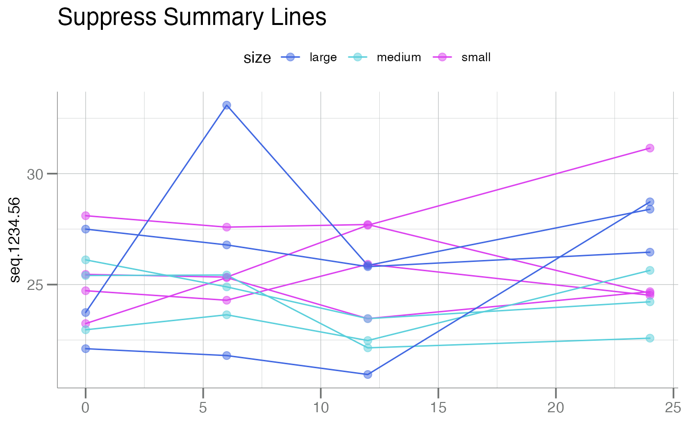
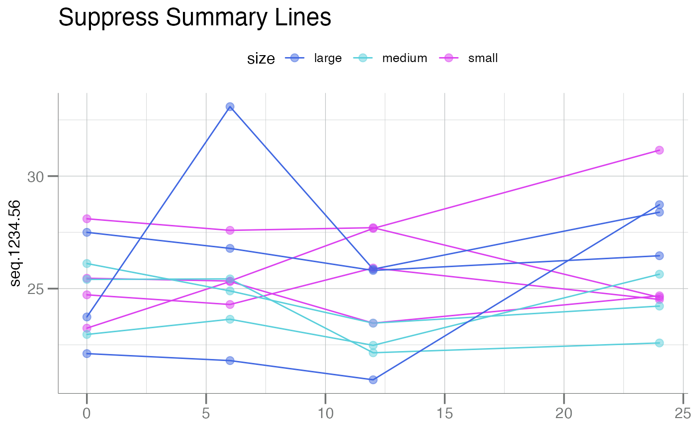

A samples plot by grouping the subjects across time in a
longitudinal study. Can be as few as two longitudinal samples
(e.g. paired samples). See examples for various plotting options.
In order to generate a longitudinal plot by sample, 4 variables
(columns of the data frame data) must be provided:
y: Typically the field containing the y-axis.time: The field containing the time-series information, the x-axis.id: The field containingsubjectidentifiers, i.e. how the points in each line should be connected.color: A field describing how groups should be split/colored. The only argument with a default value.
Arguments
- data
A data frame containing RFU values to plot, typically a
soma_adatclass object.- y
An un-quoted variable name in
datafor the column containing the the y-axis (i.e. typically the "Response" variable).- time
An un-quoted variable name in
datafor the column containing x-axis (i.e. typically the "time" variable).- id
An un-quoted variable name in
datafor the column containing the subject IDs (i.e. how the samples should be connected).- color
An un-quoted variable name in
datafor the column indicating how to color/group the lines. Default is bySex. If no grouping is desired, simply create a dummy variable and pass that column. See example below.- summary.line
A function describing how to summarize the lines. Typically
mean()ormedian(). Set toNULLto suppress summary lines.- size
Numeric. The size for the points on the subject lines.
- main
Character. Main title for the plot. See
ggtitle()forggplot2style graphics.- y.lab
Character. Optional string to set the y-axis label. Defaults to
log10(RFU)if aSeqIdname is detected.- x.lab
Character. Optional string for the x-axis. Otherwise one is automatically generated (default).
- add.box
Logical. Should boxplots be drawn for each time point? Note: this groups the subjects together by time point and looks only at the differences across time points, thus
timemust be a factor.
Examples
df <- withr::with_seed(100, data.frame(
Pop = rep_len(utils::head(LETTERS, 10), 40),
Sample = sample(c("small", "medium", "large"), 40, replace = TRUE),
TimePoint = rep(c("baseline", "6 months", "12 months", "24 months"), each = 10),
seq.1234.56 = stats::rnorm(40, mean = 25, sd = 3.5)
))
df$TimePoint <- factor(df$TimePoint, levels = c("baseline", "6 months",
"12 months", "24 months"))
new <- df |>
dplyr::mutate(
id = rep(1:10, times = 4),
time = dplyr::case_when( # convert TimePoint -> numeric; distances for plotting
TimePoint == "baseline" ~ 0,
TimePoint == "6 months" ~ 6,
TimePoint == "12 months" ~ 12,
TimePoint == "24 months" ~ 24),
Sample = dplyr::case_when( # recode Sample to correlate with IDs
id <= 4 ~ "small",
id > 7 ~ "large",
TRUE ~ "medium")
)
# No title; no x-axis label; nothing fancy
plotLongitudinal(new, y = seq.1234.56, time = TimePoint, id = id, color = Sample)
 # Use 'time' variable for proper spacing along x-axis
plotLongitudinal(new, y = seq.1234.56, id = id, time = time, color = Sample)
# Use 'time' variable for proper spacing along x-axis
plotLongitudinal(new, y = seq.1234.56, id = id, time = time, color = Sample)
 # Use `mean` as the summary lines; compared to `median` default
plotLongitudinal(new, y = seq.1234.56, id = id, time = time, color = Sample,
summary.line = mean)
# Use `mean` as the summary lines; compared to `median` default
plotLongitudinal(new, y = seq.1234.56, id = id, time = time, color = Sample,
summary.line = mean)
 # Suppress summary line with `NULL`
plotLongitudinal(new, y = seq.1234.56, id = id, time = time, color = Pop,
summary.line = NULL, main = "No Summary Lines")
# Suppress summary line with `NULL`
plotLongitudinal(new, y = seq.1234.56, id = id, time = time, color = Pop,
summary.line = NULL, main = "No Summary Lines")
 # Boxplots by time point; `time` must be a factor (TimePoint)
plotLongitudinal(new, seq.1234.56, id = id, time = TimePoint,
color = Sample, add.box = TRUE, summary.line = NULL,
main = "With Time Point Boxplots")
# Boxplots by time point; `time` must be a factor (TimePoint)
plotLongitudinal(new, seq.1234.56, id = id, time = TimePoint,
color = Sample, add.box = TRUE, summary.line = NULL,
main = "With Time Point Boxplots")
 # Suppress group-wise colors
# by setting up `dummy` column
new$dummy <- "A" # call it anything
plotLongitudinal(new, seq.1234.56, id = id, time = TimePoint,
color = dummy, add.box = TRUE, summary.line = NULL,
main = "Boxplots | Suppress Group Color") +
ggplot2::theme(legend.pos = "none")

p <- plotLongitudinal(new, y = seq.1234.56, id = id, time = time,
color = Sample, summary.line = mean)
# Facet by `Sample`
p + ggplot2::facet_wrap(rlang::sym("Sample")) +
ggplot2::ggtitle("Facet by `Sample`")
# Suppress group-wise colors
# by setting up `dummy` column
new$dummy <- "A" # call it anything
plotLongitudinal(new, seq.1234.56, id = id, time = TimePoint,
color = dummy, add.box = TRUE, summary.line = NULL,
main = "Boxplots | Suppress Group Color") +
ggplot2::theme(legend.pos = "none")

p <- plotLongitudinal(new, y = seq.1234.56, id = id, time = time,
color = Sample, summary.line = mean)
# Facet by `Sample`
p + ggplot2::facet_wrap(rlang::sym("Sample")) +
ggplot2::ggtitle("Facet by `Sample`")